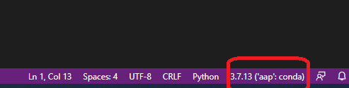

Setting up your analytics machine¶
This course will be a blend of analytics and software engineering for analytics. As such, I will start by helping you get your computer set up as your analytics machine for this course. You will:
Install several pieces of software including the Anaconda Python distribution, one or more IDEs, git and GitHub Desktop, a good text editor.
learn about conda virtual environments and create one for this course based on a YAML configuration file that I’ve provided.
create a free GitHub account if you don’t already have one.
create a free Kaggle account if you don’t already have one.
Overview of computing platform options¶
A look back at the pcda course¶
In the pcda course we used a virtual machine running Lubuntu Linux. We did that for a few reasons:
Many of these tools are totally new to students in the pcda class.
I wanted everyone to have the same computing environment with all necessary software pre-installed.
Learning Linux was one of the learning objectives for the course.
However, I also encouraged students in that class to install the major pieces of software (R, R Studio, Anaconda Python, a good text editor) on their host operating system (Windows or Mac or even Linux). I did this to emphasize that these tools are all freely available and cross-platform. By doing this, you also had multiple ways to access the software used in the pcda course. Finally, I wanted students to become familiar with installing and maintaining commonly used analytics software tools.
Choices for the current aap course¶
My plan for this course is that students will be installing and using all of the necessary software for the course on their host operating system. This could be Windows, Mac or Linux. I’m doing all of the course development for this course in Windows and all of the screencasts will be Windows based. There are several reasons for this:
Learning Linux is not one of the learning objectives for the course. As you’ll see, Linux knowledge is certainly useful and even in the Windows/Mac worlds, we need to know some Linux. However, you’ve already had sufficient exposure to Linux through the pcda class. Even if you didn’t take the pcda course and have zero Linux knowledge, you should be able to self-learn the little bit needed as we go.
We get better performance if we don’t have to use a VM as we can access all of the system RAM and CPUs.
Many of you will be working or are working in corporate environments in which Windows or Mac OS is used. I want you to see that we can do analytics work in Windows just fine. In fact, the VS Code IDE is becoming quite popular and is something you could use (more on this below).
Below, I’ll be provide guidance on getting all of the course software installed in Windows. If you are a Mac user, it’s usually pretty simple to adapt the instructions (e.g. it’s often just selecting the correct installer).
Software installs¶
Installing Anaconda Python¶
You’ll be downloading the Individual Edition.
https://www.anaconda.com/products/individual#download-section
Click the big Download button and you’ll get taken to a section with the 64bit Windows installer (or Mac). Install it. Here’s a screencast I made that walks you through the process of installing and launching Anaconda (a few different ways).
Getting conda ready to use virtual environments within Jupyter¶
This has been a source of confusion/frustration over the years for many Jupyter users. I finally wrote up a blog post to remind myself the best way to do this. I encourage you to read through it before continuing with this step.
In order for Jupyter to recognize different conda virtual environments, you may need to install some extensions. Just start a open an Anaconda Prompt shell and do the following:
> conda install nb_conda_kernels
You’ll only do this one time. From then on, Jupyter will be able to recognize different conda virtual environments. Again, see my blog post mentioned above for more details.
Setting up our conda virtual environment¶
After installing Anaconda Python on your computer, the next thing you’ll do is to create a new conda virtual environment based on a (YAML) configuration file that I’ve created. Back in the pcda class we learned a bit about conda virtual environments and used one called datasci that I created on the pcda VM. If you want an overview on conda virtual environments as well as the details, see:
For this course, I’ve created a virtual environment called aap (of course). Here’s a link to the YAML config file that defines this environment:
After downloading it, put it somewhere convenient in your filesystem and open up an Anaconda Prompt (I demo opening an Anaconda command prompt in the Installing and Getting Started with Anaconda Python screencast). You should see (base) to the left of the prompt. This indicates that you are in the base Anaconda environment. In general, we don’t want to work in the base environment. We want to work in a virtual environment of our own creation so that if we mess things up we don’t end up having to reinstall Anaconda Python. Change directories in the Anaconda command prompt to where ever you put the aap.yml file. If you’re in this class I’m sure you know how to do a cd (yes, same in Windows as it is in Linux).
Let’s look at the aap.yml file. It’s pretty self-explanatory (other than maybe channels). See the Creating an environment file manually for details on YAML environment files for conda. The channels section is telling conda where to look to find software to install. The order matters. In aap, conda will first look in the default Anaconda software channel and if not found, will look in a channel called conda-forge. You can think of it as the CRAN for user contributed packages for the Anaconda world. We’ll learn more about dependency management throughout the course. After we create our new aap environment, we’ll have all of the packages installed that are in our dependencies section (and a whole lot more since these packages have their own dependencies).
name: aap
channels:
- defaults
- conda-forge
dependencies:
- python=3.9
- numpy
- pandas
- scipy
- scikit-learn
- matplotlib
- seaborn
- ipykernel
- statsmodels
- sphinx
- myst-parser
- cookiecutter
- pillow
- python-graphviz
- openpyxl
- xlsxwriter
- pip
- pip:
- simpy
- networkx
- us
I’ve created a screencast to guide you through the steps needed. I encourage you to watch it as I also will show you where these conda virtual envs live on your computer and show how they lead to multiple Python interpreters. Understanding this will make using IDEs like PyCharm and VSCode, easier.
To actually create the new environment, run the following command at the Anaconda prompt. See Creating an environment from an environment.yml file in the Management Environments section of the docs. Obviously, our file is called aap.yml.
conda env create -f aap.yml
Then, to activate the new environment:
conda activate aap
Note that (base) changes to (aap).
The only reason that you’ll ever need to activate the aap environment from an Anaconda prompt is if you need to install some additional software into that virtual environment. The following note is important.
Note
When we use Jupyter Lab, you’ll still be typing jupyter lab from the base environment and then changing the kernel to use the aap virtual environment from within Jupyter Lab. Similarly, when we use an IDE like PyCharm or VSCode, we will tell it which conda virtual environment to use.
IDE options¶
While we will be using Jupyter Notebooks quite a bit (comes with Anaconda Python distro), we will also be using an IDE, especially for longer and more complex programs and when we want a visual debugger. There are several high quality IDEs for Python that are freely available. I will suggest two and you can decide what you want to do. If you are an experienced programmer and already have a development environment setup that you like (e.g. a good text editor and running Python from the command line), feel free to do that. I don’t care what IDE you use. I will be demonstrating some things in class like using the integrated version control capabilities of an IDE or using the visual debugger, but it’s not critical that you be using the same IDE as me. I’ll likely use a mix of PyCharm (my goto Python IDE for years now) and VSCode (because it’s lightweight, gaining popularity and I like to learn new things).
PyCharm¶
PyCharm is a very popular, full featured IDE for working with Python. They have a freely available Community Edition.
Download the Community Edition installer from going to main page: https://www.jetbrains.com/pycharm/ and clicking Download, which takes you to https://www.jetbrains.com/pycharm/download/#section=windows (for Windows) and then select Community. After the installer downloads, run it and install PyCharm. If you’ve previously installed PyCharm you’ll get asked about importing existing settings. Do whatever makes sense for you. Here are two short screencasts I made that walks through the install and getting started using PyCharm.
You’ll see in the screencasts above that I demo how to tell PyCharm which virtual environment you want to use for a specific project. As you become more proficient with Python development, you will likely create multiple conda virtual environments.
I also recommend the official PyCharm Quick Start Guide. There is a ton of helpful information and many tutorials/screencasts available on the web.
Visual Studio Code (VSCode)¶
Microsoft released VSCode as a free and open source package to the world back in 2016. It’s a powerful, yet lightweight, code editor with all the nice standard features of a good IDE such as code completion, syntax highlighting, visual debugger, integration with VCS, and more. I just started using it a years ago and it’s quite nice. You could certainly use it for this course - many students have in the past.
You can find installers for Windows, Linux, and Mac at https://code.visualstudio.com/download. Download and install in the usual way. When you run it for the first time and open some Python file, you’ll get asked about installing the Python Exentions. Yes, DO THIS. That will enable things like syntax highlighting and autocomplete. You want that.
You’ll might also be prompted to select a Python interpreter. VSCode should recognize that Anaconda is installed and you can select the aap conda virtual environment we created above.
You can find a tutorial on using VSCode for Python development at https://code.visualstudio.com/docs/python/python-tutorial- obviously ignore the part about installing a Python interpreter as we have already installed Anaconda Python.
You can launch VSCode either from the Start Menu or from an Anaconda Prompt (by typing code).
code
Within VSCode, you can toggle between conda virtual environments by clicking on the environment indicator at the lower right of the window.
PyCharm or VSCode?¶
It’s up to you. There are plenty of comparisons out there. They both have a ton of features though VSCode has a pretty sparse menu structure which makes it easier for beginners - other features are accessible from a command palette. PyCharm enforces the use of a folder based Project while VSCode seems to use the notion of workspaces (which could be based on one or more folders). In general, we’ll be thinking of each project being in a folder whether we use PyCharm, VSCode or something else.
Both actually now support notebook use from within the IDE itself. I’ve only tinkered around with this a bit. When I use notebooks, I use the browser based Jupyter Lab interface and when I’m working with .py files, I use an IDE. Here are two short articles on using notebooks within VSCode (and PyCharm). The first is from a terrific blog named Practical Business Python (written by Chris Moffitt) - we’ll be visiting several of his posts throughout the semester.
A third IDE option (?) - Spyder¶
Anaconda ships with an IDE called Spyder. We used Spyder this past year in my pcda class. However,
there’s been some trickiness in getting Spyder working with a specific conda virtual environment. The Spyder folks appear to be trying to address this and have even released standalone Windows Installers for Spyder (as opposed to using the one that ships with Anaconda). I’ve
messed around with this a bit but need to experiment some more. So, if you are able to get Spyder working with the aap virtual environment, you can certainly use it for this class. It’s got a visual debugger and integration with git for version control. See https://github.com/spyder-ide/spyder/wiki/Working-with-packages-and-environments-in-Spyder for more info on this issue. If someone does get this working, please post how you did it in the class Q&A Forum in Moodle.
git and GitHub¶
Installing git¶
Some of you may have used git and GitHub in the pcda class. We will definitely use it in this class. While git is included with most Linux distributions, we need to install it in Windows/Mac. When we do, you’ll see that we actually get a Linux bash shell that we use for running git commands.
To install git on Windows/Mac, go to the Git site at https://git-scm.com/ and follow the instructions to download and install the appropriate version for your operating system. Here’s a screencast to walk you through the install and launching git bash from the Start Menu.
Creating a GitHub account¶
You will also need a free GitHub account if you don’t already have one. Create a free GitHub account by going to https://github.com/ and following the instructions.
Installing GitHub Desktop¶
There were some large changes last year with respect to how GitHub handles authentication from various apps. The big one for us is that it is not going to be possible to do git push operations from the git bash shell using your GitHub login to authenticate (unless you create an SSH key - more on that below). In the past, you’d just get prompted for your GitHub username and password. For security reasons, GitHub is phasing this out and requiring something known as Personal Access Tokens. One thing you can do is use the freely available GitHub Desktop application to handle the authentication and push/pull operations between your local computer and GitHub. For example, I could still do my local git work using the git bash shell and then just hop over to GitHub Desktop to push things up to my GitHub account. I’ve created a screencast to show you how this works. In the screencast I’ll also show you what happens when you try to do a git push from the git bash shell and discuss how this is related to the new credentialing method used by git (that we had a prompt for during the git install).
However, it is possible to do a git push from the git bash shell if you first set up an SSH key. See these instructions at GitHub on setting up an SSH key to use with your GitHub account. This is actually
the method I use.
For now, just follow the link above and download and install GitHub Desktop. I’ll demo its use on the Version control with git and GitHub page.
Text editor¶
Download and install a good text editor such as Notepad++, Sublime Text, or any other good text editor. It should support syntax highlighting and regular expressions.
Getting the PDSH notebooks¶
As mentioned on the Textbooks page, the PDSH textbook has a really good set of companion Jupyter notebooks. You can get them from JVP’s GitHub site. You can either clone the repo or download it as a zip file. You should definitely get these as I’ll be referring to them as references and review items. Here’s a short screencast on doing this.
kaggle¶
Get a free Kaggle account as it’s a great learning resource.